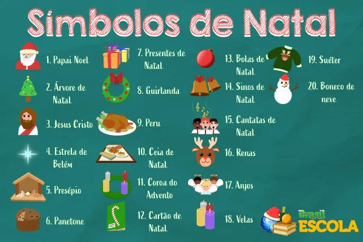

Quais são os principais símbolos do Natal?
Com o Natal surgem vários sinais representativos dessa comemoração festiva, cada qual com um significado distinto e com origem pagã ou religiosa.Quando falamos no nascimento de Cristo, a representação mais presente na nossa cabeça é o presépio, afinal ele retrata o cenário onde o menino Jesus nasceu.
E aí, de forma conjunta ou isolada, conhecemos os elementos que nele figuram: a sagrada família, composta por Jesus, José e Maria, os três reis magos, o anjo e a estrela.
